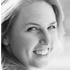
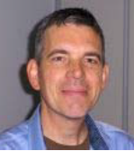

De huisarts en de specialist ouderengeneeskunde komen elkaar steeds vaker tegen rondom de kwetsbare oudere in de wijk en in (kleinschalige) woonvoorzieningen voor ouderen. Samenwerken start met het van elkaar weten wie waarvan is en wie wat kan. Juist die overlap waarop de huisarts en SO elkaar tegenkomen zien we ook in de opleidingen: het onderwijs over kwetsbare ouderen in de thuissituatie. In 2022 is een aantal docenten en onderwijskundigen van beide opleidingen aan de slag gegaan om die overlap te vangen in gezamenlijk onderwijs voor aios van beide opleidingen. Maar hier is het niet bij gebleven. Op Scheveningen is een interprofessioneel project rondom ouderen die op de SEH terecht zijn gekomen van start gegaan met aios huisartsgeneeskunde, SO en interne geriatrie. En beide opleidingen hebben besloten om samen te werken bij de organisatie en uitvoering van de Cuba-stage. Op deze manier komen aios SO en huisartsgeneeskunde elkaar in de opleiding al steeds vaker tegen.
SOOL en huisartsopleiding Rotterdam
dr. Esther Wesseling, hoofd huisartsenopleiding Erasmus MC Rotterdam
Met de komst van de dependance van de specialist ouderengeneeskunde naar het Erasmus MC, is het hele palet van generalistische opleidingen in Rotterdam neergestreken. Dit biedt toekomstmogelijkheden om intensiever samen te werken. Het bevordert de mogelijkheid om al in je opleiding aan de slag te gaan met interprofessionele projecten en gezamenlijk onderwijs. Op dit moment zijn er keuzestages voor de aios SOG in huisartsencentra, waar zij samen met de aios huisartsgeneeskunde optrekken in de zorg voor kwetsbare ouderen. We kijken uit naar alle innovatieve projecten die nog gaan volgen.
SOOL en de opleiding arts verstandelijk gehandicapten Rotterdam
Hanneke Veeren, hoofd opleiding arts-VG, Erasmus MC Rotterdam
Het Opleidingsinstituut Arts VG in het Erasmus MC in Rotterdam is uniek in zijn soort: het is het enige opleidingsinstituut in dit vakgebied in Nederland.
Vanuit Rotterdam coördineren we en faciliteren we de opleiding van aiossen door het hele land.
Al vele jaren zijn is er een fijne samenwerking met de collega's van SOOL in Leiden. Interprofessioneel opleiden staat immers bij beide opleidingen hoog op het verlanglijstje. Onze vakgebieden, hoewel verschillen qua doelgroep, kennen immers ook vele overeenkomsten.
Generalistische zorg, multidisciplinaire zorg, gericht op kwaliteit van leven, op het voorkómen van (nog meer) problemen, met aandacht voor het familiesysteem, en het behoud van eigen regie. Met belangrijke thema's als Multimorbiditeit, polyfarmacie en ethische dilemma's. En soms -als het niet anders kan- met Zorg&Dwang.
Onderwerpen genoeg om samen met elkaar of van elkaar van te leren.
Aiossen van beide opleidingen werken samen in de zogenaamde transitie cursus waarin interprofessioneel specifieke casuïstiek wordt behandeld.
Onze aiosverenigingen, de VAAVG en VASON hebben ook onderling veel contact.
In 2022 hebben de stafleden van beide opleidingsinstituten door middel van een gezellige borrel nader met elkaar kunnen kennismaken. Voor zover dat nodig was tenminste, want er zijn meerdere collega's die bij beide opleidingen werken/gewerkt hebben.
Daar zijn weer mooie vormen van kruisbestuiving uit ontstaan. In het curriculum van 2023 staat dan ook een gezamenlijk onderwijsprogramma met een aiosgroep van SOOL en aiosgroep van de arts VG-opleiding op de planning.
Ook op andere gebieden is er regelmatig uitwisseling. Al jaren volgen onze opleiders in de KOO dezelfde modules. Door het perspectief vanuit twee werkvelden kan juist de focus op het vak van “opleider” worden versterkt. Opleiden, coachen, beoordelen, kaders scheppen en ruimte geven aan de aios zijn immers vaardigheden die opleiders uit beide vakgebieden verder willen ontwikkelen.
En natuurlijk trekken we ook samen op in de campagne “dokters -zonder witte jassen”.
Gefaciliteerd door de SBOH hebben we op diverse carrière evenementen voor geneeskunde studenten duidelijk kunnen maken dat er meer is dan de specialistische ziekenhuisgeneeskunde.
En dat is hard nodig gezien de grote tekorten bij zowel huisartsen Specialisten Ouderengeneeskunde, artsen VG en sociaal geneeskundige profielen.
Ik hoop onze samenwerking de komende jaren nog verder te kunnen verstevigen en uitbreiden
Interprofessioneel opleiden
Paula Broersen, onderwijskundige SOOL dr. Tony Poot, huisarts, PHEG
Interprofessionele samenwerking is in 2022 nóg meer een vanzelfsprekendheid in de ouderenzorg van aller dag zowel binnen de muren van de instellingen als in de eerstelijn. Wellicht mede onder invloed hiervan worden interprofessionele competenties explicieter benoemd binnen zowel generalistisch als specialistische opleidingen.
Het afgelopen jaar zijn deze interprofessionele competenties benoemd en hebben hun weg gevonden naar de herziene curricula van landelijke en Leids/Rotterdamse SO en huisartsenopleiding. Er zijn twee werkgroepen van de SO en huisartsenopleiding aan de slag gegaan om gezamenlijk onderwijs te ontwerpen. De een richt zich op eerstelijnszorg (start onderwijs sept ’23) en de ander op medicatieveiligheid (start onderwijs sept ’24) in samenwerking met de apothekersopleiding. Vanuit de werkgroepen wordt er op basis van concrete interprofessionele leerdoelen onderwijs ontwikkelt en vormgegeven. Toch is ook gebleken dat het nog niet gelukt is, de al langer bestaande, interprofessionele online transitie cursus -in de huidige vorm- een structurele plaats te geven in de SO en huisartsopleidingen. Het blijkt een probleem om ruimte te vinden voor deze interprofessionele leerdoelen en activiteiten binnen de met discipline specifieke leerdoelen gevulde curricula en knellende logistiek. Wij zijn erg blij geweest met de samenwerking tot nu toe en ieders enthousiasme en hart voor het interprofessionele opleiden en wij verheugen ons er dan ook op deze samenwerking ook met de AVG opleiding en huisartsopleiding in Rotterdam verder te ontwikkelen.
Interprofessioneel onderwijs (IPO); combinatie van onderwijs voor
AIOS in de ziekenhuismodule en onderwijs AIOS interne geneeskunde
differentiatie ouderengeneeskunde
dr. M. van Eijk, specialist ouderengeneeskunde;
dr. F. van den Bos, internist ouderengeneeskunde
In 2022 is gestart met interprofessioneel onderwijs tijdens de ziekenhuismodule van SOOL en onderwijssessies voor de afdeling interne ouderengeneeskunde van LUMC. We hebben de raakvlakken in het onderwijs beoordeeld. Vanuit de interne geneeskunde differentiatie ouderengeneeskunde wordt onderwijs gebaseerd op het raamplan interne geneeskunde 2019. De systematiek die gebruikt wordt daarin is via entrustable professional activities (EPAs), met 5 EPAs:
EPA Comprehensive geriatric assessment inclusief neurologisch en psychiatrisch onderzoek
EPA Cognitieve functies en stoornissen inclusief differentiaaldiagnose met delier en depressie
EPA Behandeldilemma’s
EPA Mobiliteit en vallen
EPA Consultvoering OG
Het huidige onderwijs in de ziekenhuismodule van SOOL is gebaseerd op het landelijk opleidingsplan SOON versie mei 2016. De doelstelling die wordt geformuleerd in het opleidingsplan van SOON is dat de AIOS ervaring opdoet met tweedelijnszorg voor (kwetsbare) ouderen en dat die zich medisch inhoudelijk kan verdiepen in verschillende kritische beroepssituaties (KBS). Er worden geen specifieke KBS genoemd, maar er zijn veel KBS die aansluiten bij de EPAs van de interne geneeskunde.
Het belangrijkste doel van het interprofessioneel onderwijs is onderwijs te organiseren passend bij de leerbehoeften van de AIOS en met invulling vanuit zowel de 2e lijn als de 1e lijn. Daarnaast is het leren van elkaars blik op de kwetsbare oudere patiënt een enorme aanvulling. De kennis tussen onze beiden specialismen vullen elkaar aan binnen de ouderengeneeskunde, maar we kijken vaak net anders en lijken elkaar daardoor in de praktijk niet altijd te begrijpen. Door onderwerpen en casuïstiek te bespreken krijgen deelnemers, naast meer kennis over het betreffende onderwerp, meer inzicht in de denkwijze van de ander. Dit faciliteert de samenwerking en helpt in het verlenen van de beste zorg voor de kwetsbare oudere patiënt.
Het eerste jaar van het IPO binnen de ziekenhuismodule is afgerond. Het onderwijs vindt in principe elke 2 weken plaats en duurt 1 uur. Er wordt een actieve inbreng van de AIOS en deelnemers verwacht. Voor de inhoud wordt door de opleiders met een raamwerk gewerkt, gebaseerd op de assen van het geriatrisch assessment. Er wordt gevraagd aan de AIOS om zich in te schrijven voor een bepaald onderwerp en samen met een stafmedewerker dat onderwerp voor te bereiden. Er wordt veel gebruik gemaakt van casuïstiek uit de praktijk en gezamenlijk gereflecteerd op een bepaald beloop. Er wordt ook gebruik gemaakt van gastsprekers die uit aanpalende disciplines komen, bv een neuropsycholoog die vertelt over validiteit van testresultaten van neuropsychologisch onderzoek of een geriater uit een psychiatrisch ziekenhuis.
De wens is nog meer aansluiting te zoeken in het onderwijs. Tijdens het reguliere onderwijs, in zowel de ziekenhuismodule van SOOL als de regionale opleidingsdagen van de interne geneeskunde, is er al veel kruisbestuiving.
Na een succesvolle eerste editie in 2020 is er in januari 2022 voor de tweede keer een groep AIOS naar Cuba gegaan.
Deze interprofessionele keuzestage van drie maanden is ontstaan vanuit de gedachte dat samenwerken essentieel is voor goede ouderenzorg in de eerste lijn en dat je dit het best kan leren door het te beleven. De groep van specialisten ouderengeneeskunde in opleiding, huisartsen in opleiding en wijkverpleegkundigen van Buurtzorg hebben zich, verdeeld in vijf interprofessionele (IPO) groepen, deze keer gefocuste op de thema’s revalidatie, eenzaamheid, infectiepreventie, mantelzorg bij dementie, vitaliteit, palliatieve zorg en polyfarmacie.
In december 2021 hebben ze zich verdiept in het Nederlandse zorgsysteem middels gezamenlijke opdrachten, wekelijkse terugkomdagen en individuele stageplekken bij specialisten ouderengeneeskunde werkzaam in de eerste lijn.
In januari 2022 heeft de groep vol enthousiasme een maand kennis gemaakt met het Cubaanse zorgsysteem waar preventie en wijkgericht werken vaste pijlers zijn. Naast de inhoudelijke lezingen en werkbezoeken zijn de IPO groepen gekoppeld aan een eigen huisarts/wijkverpleegkundige praktijk. Ook heeft de groep volop genoten van de mogelijkheid zich, weliswaar met mondkapje op, onder te kunnen dompelen in de Cubaanse cultuur met onder andere salsalessen, bezoeken aan oud Havana, Trinidad en Vinales vallei.
In februari 2022 heeft elke IPO groep, met hun ervaringen van de twee maanden ervoor, een preventief project ontwikkeld. Het opzetten van een ouderencirkel, jongeren laten meedenken over de zorguitdagingen en het inzetten van brigadistas om ouderen beter in beeld te krijgen in de wijk zijn een paar van de ideeën. Eind februari was er het sluitstuk van de stage: een zeer geslaagde hybride symposium voor 240 belangstellenden waar zij hun lessen uit Cuba hebben gepresenteerd.
Door de opzet van de stage ligt de nadruk op de competenties communicatie, organiseren, samenwerken en professionaliteit. De stage biedt de AIOS en wijkverpleegkundigen een kans om te reflecteren op ons eigen zorgsysteem, geïnspireerd te raken over samenwerken en preventie in de eerste lijn en daarnaast na te denken over wat voor dokter of verpleegkundige ze in de toekomst willen zijn.
Voor 2023 staat de keuzestage van september tot november gepland en zal de samenwerking met geneeskunde studenten van de halve minor Public Health Cuba en ook de competentie kennis en wetenschap een grotere rol gaan krijgen in deze stage.
De assessmentperiode
Anna van Daalen, specialist ouderengeneeskunde, coördinator onderwijs basismodule SOOL
Vanuit SOOL zijn we voortdurend bezig het onderwijs te vernieuwen en up-to-date te houden. Hierdoor werd ook de assessment periode, die alle aios doorlopen in de eerste vier maanden van hun opleiding, door de docenten weer eens onder de loep genomen. Het doel van de assessment periode is om voor zowel aios als opleider (praktijkbegeleider) als mentor (van het instituut) binnen een korte periode inzicht te krijgen in de vaardigheden, attitude, kennis en kunde van de aios op alle CANMEDS. Hier volgt een gesprek met aios, opleider en mentor om de sterke punten te benadrukken en de leerpunten voor het individuele leerplan alvast te formuleren. Een waardevolle en intensieve periode waar de aios en zijn/haar omgeving elkaar en de kunde van de aios in korte tijd goed leren kennen!
De assessment periode is herzien en is, in het kort, opgebouwd rondom twee belangrijke thema’s van een specialist ouderengeneeskunde. In het eerste deel van het assessment staat ‘hoe breng ik een patiënt in kaart?’ centraal, in het tweede deel ‘hoe werk ik multidisciplinair samen?’ Aan de hand van deze thema’s is het assessment programma opgebouwd en herzien. Een nadrukkelijker rol heeft nu ook de competentie maatschappelijk handelen een plek gekregen in het assessment. We zien bij aios en docenten dat er met enthousiasme wordt gereageerd op deze opdracht en dat er echt pareltjes van ideeën komen van aios die we in de aankomende jaren ook een groter podium willen geven!
Wetenschappelijke vorming

dr. Maaike Scheffers-Barnhoorn, specialist ouderengeneeskunde, coördinator lijn
wetenschappelijke vorming SOOL
Onderwijs in het kader van evidence based medicine in de ouderengeneeskunde: blijft in beweging!
‘Kennis en wetenschap’ is een van de kerncompetenties van de specialist ouderengeneeskunde, en onderwijs op het gebied van de wetenschappelijke vorming heeft daarom ook een specifieke plek in de opleiding gekregen. ‘De wetenschap’ is echter voor een deel van de AIOS niet het meest geliefde vak, zo blijkt uit de gesprekken met AIOS bij aanvang van de opleiding. Een veel genoemd argument is dat ‘wetenschap’ moeilijk is, zonder (uitgebreide) eerdere ervaringen op dit gebied.
Als docenten van de lijn wetenschappelijke vorming staan we daarom steeds voor de uitdaging hoe we AIOS op een laagdrempelige manier kennis kunnen laten maken met verschillende onderzoeksmethodologie. Hoe we collega’s kunnen opleiden die zich vertrouwd voelen om onderzoeksbevindingen kritisch te beschouwen, en de resultaten te kunnen vertalen naar hun eigen praktijk, zonder expert te zijn in ingewikkelde statistiek. Toegepaste kennis! Bovenal is het voor ons ook een persoonlijke missie/ uitdaging om te laten zien dat wetenschap leuk kan zijn. Dat het niet alleen relevant, maar ook leuk is om kennis te delen met elkaar!
Zo hebben we in 2022 het Kritisch Lezen onderwijs herzien. We hopen dat de aangeboden kennis én de opgedane ervaringen (discussies met elkaar voeren over kwaliteit en toepasbaarheid), een goede basis vormt voor de CAT (critical appraised topic) en de referaten die de AIOS moeten verrichten binnen de opleiding. Ook is er in het afgelopen jaar meer aandacht gekomen voor onderwijs over kwalitatief onderzoeksmethodologie (uitbreiding van aantal lessen hierover). En zijn er ook een aantal AIOS die met een kwalitatieve onderzoeksopzet het wetenschappelijk leeronderzoek (WLO) verrichten.
Binnen het WLO verrichten de AIOS gedurende de opleiding een wetenschappelijk onderzoek. In de afgelopen jaren hebben de AIOS meegewerkt aan dataverzameling voor een (groot) cohort onderzoek, en werd deze database gebruikt voor het WLO. Collega’s van SOOL Wing Tong en Jenny van der Steen hebben het WLO in deze vorm geëvalueerd. Aanvullend daaraan hebben zij onderzoek gedaan naar de attitude en motivatie van AIOS ten aanzien van evidence based medicine (EBM), in het bijzonder attitudes ten aanzien van onderzoek doen. De bevindingen hiervan, en de “lessons learned” zijn gepubliceerd in de jubileumeditie van het TvO (november 2022). Deze bevindingen geven ook weer waardevolle input voor de herziening van de lijn wetenschappelijke vorming. Daarnaast is het ook mooi om te vermelden dat er in het kader van de landelijke curriculum herziening (2024) meer verbinding is gekomen tussen de wetenschapsdocenten van de verschillende opleidingsinstituten. Er valt veel te leren van deze uitwisseling met elkaar, en hopelijk wordt dit in 2023 verder voortgezet!
Tot slot nog het nieuws vanuit de staf van de lijn wetenschappelijke vorming. Helaas hebben we in 2022 afscheid moeten nemen van collega Rutger Middelburg. We zijn blij dat we tegelijk ook een nieuwe collega hebben mogen verwelkomen: Milly van der Ploeg; specialist ouderengeneeskunde die in het verleden de opleiding bij SOOL heeft gevolgd, en dit heeft gecombineerd met een promotie traject (AIOTO).
In de afgelopen jaren is de opleiding bij SOOL enorm gegroeid. Een trend die steeds vaker voorkomt is het parttime werken van de aios tijdens de opleiding. Ook zwangerschappen komen veelvuldig voor. Door uitloop van stages of herintrede in verschillende periodes gedurende het hele jaar sluiten stages en onderwijs niet nauw meer op elkaar.
De uitdaging voor mij als onderwijscoördinator in de verdiepingsfase is dan ook om per aios een passend plan te maken zodat deze zo min mogelijk vertraging oploopt tijdens zijn/haar opleiding. Dit vraagt logistiek het e.e.a. van onze docenten in de begeleiding van deze aios. Het is ons tot nu toe altijd gelukt maar het blijft flink aanpoten.
Een andere uitdaging bij deze groei is om het overzicht van het gehele curriculum niet te verliezen. Zo wil je niet teveel overlap van onderwijsonderwerpen of gemis van relevante ontwikkelingen binnen het vak van de ouderengeneeskunde. Onderwijs moet aanvullend zijn op de praktijk en verdiepend naarmate de opleiding vordert. Daarnaast moet er ook ruimte zijn voor eigen invulling door de aios. Momenteel zijn wij aan het exploreren hoe wij het curriculum overzichtelijk in beeld kunnen krijgen met behulp van o.a. curriculum mapping. Dit zal vooral van toepassing zijn op het nieuw landelijk opleidingsplan die vanaf september 2024 van start gaat.
De escaperoom
Anna van Daalen, specialist ouderengeneeskunde, coördinator onderwijs basismodule SOOL
Vanuit SOOL is een escape room ontwikkeld, in het teken van de ouderengeneeskunde. De deelnemers moeten als arts in opleiding op huisbezoek, als blijkt dat de oudere dame in kwestie zichzelf per ongeluk heeft buitengesloten op het balkon. De deelnemers moeten via het oplossen van puzzels en raadsels, zich toegang verschaffen tot de woning en de sleutel van het balkon zien te vinden, zodat ze de dame op tijd uit haar benarde positie kunnen bevrijden.
Inmiddels zijn drie enthousiaste aios ook betrokken bij dit project. Het uiteindelijke doel van de escape room is, dat onder begeleiding van AIOS ouderengeneeskunde, andere doelgroepen worden bereikt en enthousiast gemaakt voor de ouderengeneeskunde (zoals bijvoorbeeld geneeskundestudenten, co-assistenten, etc) en de opleiding ouderengeneeskunde nog meer op de kaart te zetten.
Mocht je interesse hebben om de escape room voor een event in te zetten, schroom dan niet om het secretariaat van SOOL te benaderen!
Herziening landelijk opleidingsplan
Beatrijs de Leede, opleidingscoördinator SOOL
Vanuit SOOL is actief gewerkt aan de herziening van het Landelijk opleidingsplan voor de ouderengeneeskunde. Tijdens de opleidersdagen is hier ruim aandacht aan besteed en hebben opleiders een waardevolle input geleverd voor onder andere de kenmerkende beroepsactiviteiten. In het LOP komt meer aandacht voor werken in de eerste lijn, ouderenpsychiatrie en interprofessioneel werken en komt de nadruk meer op ontwikkeling en minder op toetsen. Het LOP zal voor 1 april naar de CGS gaan die het plan moet beoordelen en goedkeuren.
Selectieprocedure 2022
Beatrijs de Leede, opleidingscoördinator SOOL
In 2022 hebben 46 aios gesolliciteerd voor een opleidingsplaats, Hiervan zijn 3 kandidaten afgewezen en 2 kandidaten hebben besloten (nog) niet met de opleiding te starten. Speciale aandacht is er geweest voor de werving van aios die na een andere specialisatie voor de ouderengeneeskunde kiezen (tweede carrière). Hiervoor start in maart 2023 een speciale groep.
Kwaliteitsbeleid SOOL
Marcel Knop, specialist ouderengeneeskunde, waarnemend hoofd SOOL en
kwaliteitscoördinator
Zoals in het vorig jaarbericht reeds aangekondigd heeft in 2022 binnen SOON een evaluatie en bijstelling van het kwaliteitsinstrument Metis plaatsgevonden. Dit heeft er toe geleid dat van de voorheen 7 thema’s en nu 5 thema’s zijn, dat de kwaliteitsmetingen voortaan van september tot en met augustus lopen en dat elke 2 jaar de gehele cyclus is doorlopen. Dit laatste vooral om het passend te maken met de werkwijze van de RGS en die rondom de controle op de kwaliteit van opleiders en stage-opleiders en de opleidings- en stage-instellingen.
Tevens zal een start worden gemaakt door de opleidingsinstituten om elkaar te visiteren en daarbij het Metis instrument gebruiken, vanuit SOOl hebben we aangegeven, gezien de toen aanwezige vacature van beleidsmedewerker, hier op aan te haken als in de vacatur is voorzien.
Voor het jaar 2022-2023 worden de domeinen 2 Curriculum, 3 Leeromgeving en 4 Toetsen en Beoordelen gemeten, volgend jaar de domeinen 1 Visie en Kwaliteitsbeleid en 2 Organisatie, Management & Mensen.
Na de komst van de nieuwe beleidsmedewerker Dianne Bremmer hebben we een start gemaakt met de meting 2022-2023 waarbij aan de aios, opleiders en stage-opleiders en aan docenten en mentoren een enquête is gestuurd. Daarnaast zijn gesprekken geweest met het MT, met docenten, de wetenschapsstaf en met de opleidersvertegenwoordiging.
Naast het bijdragen aan de bijstellingen van Metis is uiteraard ook gemonitord op de ingezette verbeteringen naar aanleiding van de resultaten van de eerdere Metis bevindingen.
Zo is communicatie naar aios verbeterd door meer gebruik te maken van het informatie kanaal Bright Space. De ingezette rooster-app waarin het rooster zichtbaar was voor aios is gestopt omdat het systeem teveel fouten bevatte. Inmiddels is er een nieuwe route om digitaal inzage te krijgen in het rooster, welke breed is voor de gehele Leidse Universiteit en welke (nog) geen app-vorm kent.
Kwaliteit verhogend is ook het gestart zijn met een opleidingsvertegenwoordiging, het aansturen van de JVT om te anticiperen op de groei van het aantal aios, het traject dat het MT heeft doorlopen met een coach om ook met name te leren omgaan met de groei van het aantal aios en daarmee met de groei van de organisatie.
Ook verbeterde de communicatie en informatie aan staf en opleiders middels nieuwsbrieven en bijstelling van de programma’s van de afstemdagen van opleiders.
De groei van de opleiding geeft ook behoefte aan meer opleiders en stage-opleiders waarbij met hen gesprekken zijn gevoerd om hen te enthousiasmeren voor het begeleiden van aios en hen te wijzen op de eisen aan het opleidersschap. Ook werden voor het eerst bijeenkomsten voor startende opleiders georganiseerd waarbij met name veel informatie werd verstrekt over de opbouw en werkwijze van onze opleiding.
Ouderengeneeskunde als 2e carrière: de ontwikkeling van een
aangepast opleidingstraject

Gedurende het jaar 2022 is door de gezamenlijke opleidingen ingeschat dat er vanuit andere artsen met een afgeronde vervolgopleiding belangstelling is voor de ouderengeneeskunde. Die inschatting bleek volledig juist - op de eerste informatieavond kwam een ruim aantal belangstellenden.
Op 1 maart 2023 starten 10 artsen (huisartsen en internisten) aan de Vervolgopleiding Specialist Ouderengeneeskunde.
Vanuit SOON is, met afvaardigingen van elk instituut, een verkort curriculum bedacht waarin deze artsen in een half jaar het basisjaar van de opleiding zouden kunnen doorlopen. Nadat deze opzet door het bestuur van SOON was geaccordeerd hebben 2 docenten van SOOL, Nienke Slagboom en Jeroen Janssens, zich gemeld om dit programma verder vorm te geven.
Het onderwijs wordt gegeven vanuit de Schola Medica in Utrecht met een terugkomdag op dinsdag. In de zomervakantie wordt het programma afgerond en gaan de aios verder op de eigen instituten met de verdiepingsfase.
De evaluatie daarna zal leren hoe het vervolg eruit komt te zien.
Beschouwingen van een docent-specialist ouderengeneeskunde in
Rotterdam
Wat een ontzettende carrièresprong Anjalie, zei een collega die ik al enkele jaren niet had gezien en weer tegenkwam op de opleidersdag SOOL. “That’ s one way to put it, “ is wat ik dacht. “ Vind je?” , is wat ik zei.
Ging het mij daarom? Ik denk het niet. Ik wilde iets vernieuwends maar vertrouwds tegelijk. Uitzoomen uit de dagelijkse praktijk, en er nog steeds mee verbonden blijven.
Het heeft me veel gebracht tot nu het mentorschap en het doceren.
Als ik daar een woordenwolk voor zou moeten maken dan zouden woorden als meaningfull connections, generativiteit, ken uzelfe, leren moet leuk zijn ( deze is van collega Bart Beck) daar zeker in voor komen. Onder die wolk stel ik me dan een berg voor. Hoe verder je komt, hoe mooier het uitzicht, maar de top is geen doel op zich, het is wat je onderweg tegenkomt. In de opleiding en in de fase van je leven. De AIOS mogen vergezellen op die weg vind ik een mooie taak, die je als vanzelf zelf ook verder brengt. (Metafoor Joan Garriga, uit: Namaste). En tegen de tijd dat wij zelf moe zijn van de klim, en de krachten zijn verzwakt, dan staat een nieuwere frisse generatie met voldoende tools en ervaring klaar om ons belangrijke werk voort te zetten. Ik ben erg onder de indruk van de kennis en ervaringen van de gemiddelde AIOS. (Van elkaar) leren en gedoseerd doceren is goed en leuk!
En… hoewel een fancy lokaal zeker geen randvoorwaarde is voor goed onderwijs en het uitwisselen van ervaringen, bijgedragen heeft het zeker.
Onderzoek onderwijs ouderengeneeskunde
Annemarie Moll-Jongerius, adjunct-hoofd SOOL
Met de toename van het aantal oudere patiënten is het belangrijk dat geneeskunde studenten goed voorbereid worden op de zorg voor deze patiëntenpopulatie, ongeacht in welk specialisme zij terecht komen. Tevens is er binnen onze samenleving een grote behoefte aan artsen die werken buiten het ziekenhuis waaronder binnen het specialisme ouderengeneeskunde. De opleidingen specialisme ouderengeneeskunde mogen een groeiend aantal opleidingsplaatsen invullen, echter de instroom blijft achterlopen bij deze groei, waardoor het tekort aan specialisten ouderengeneeskunde dreigt toe te nemen. Onderzoek van onderwijs ouderengeneeskunde kan een belangrijke bijdrage leveren aan de kwaliteit van het onderwijs en de bekendheid van de ouderengeneeskunde binnen de geneeskunde opleiding.
Van 2013 tot 2019 was ik coördinator van en docent in het coschap ouderengeneeskunde in het vijfde jaar van de Master Geneeskunde. Studenten deelden met mij hun ervaringen waarin zij aangaven zich ongemakkelijk te voelen in het verpleeghuis omdat het ‘dokter zijn’ daar zo anders was dan in het ziekenhuis. Deze ervaringen maakten mij nieuwsgierig en gaven richting aan het onderwerp van mijn promotieonderzoek; professionele identiteitsontwikkeling van de geneeskunde student in relatie tot de zorg voor de oudere patiënt.
Professionele identiteitsontwikkeling is gerelateerd aan de vraag ‘wie wil ik worden als dokter’ en heeft te maken met het zich eigen maken van normen en waarden binnen een bepaalde context. Bij de geneeskunde student wordt deze ontwikkeling onder andere beïnvloed door de context van de geneeskunde opleiding welke voornamelijk nog ziekenhuis -en ziekte gericht is. Hierdoor ontwikkelt de student zich tot een dokter met een focus op behandelen en genezen. Deze focus is niet altijd passend binnen de ouderengeneeskunde. Met ons onderzoek hopen wij meer zicht te krijgen op wat een passende professionele identiteit is voor de zorg voor de oudere patiënt en welke factoren van belang zijn voor de ontwikkeling van deze identiteit.
Binnen het internationale onderzoek van onderwijs ouderengeneeskunde is het concept van professionele identiteitsontwikkeling een relatief nieuw concept. Inmiddels ben ik aangesloten bij de Special Interest Group Education & Training van de EuGMS (European Union Geriatric Medicine Society). Deelname aan deze groep geeft ons mogelijkheden om het concept verder uit te werken in relatie met bestaand onderzoek naar onderwijs ouderengeneeskunde. We hopen met ons onderzoek de ontwikkeling van de ouderengeneeskunde binnen het geneeskunde opleiding weer een stap verder te brengen!
Mocht u n.a.v. van dit stuk vragen hebben over mijn onderzoek dan kunt u mij mailen: A.Moll-Jongerius@lumc.nl
Wilco Achterberg gasthoogleraar in Nottingham
Al vele jaren heeft SOOL goede contacten met de universiteit van Nottingham. Er is uitwisseling geweest van artsen in opleiding en er is gezamenlijk onderzoek gedaan.
De samenwerking is per 1 augustus 2022 geformaliseerd, met de officiële benoeming van Wilco Achterberg als gasthoogleraar aan de University of Nottingham. De benoeming is in principe voor een periode van 4 jaar, en de doelstellingen liggen op het gebied van onderzoek naar pijn bij dementie en geriatrische revalidatie. Daarnaast gaan we samen met de afdeling geriatrie uit Nottingham experimenteel onderwijs ontwikkelen, gericht op interprofessioneel, intercultureel leren van de klantreis van ouderen.
In oktober 2022 was er een feestelijke bijeenkomst, a Celebration of Ageing Research, en daarin was er plaats voor de inauguratie van Prof Adam Gordon (door COVID-19 lang uitgesteld) en voor de aanstelling van Wilco Achterberg. Zijn lezing over pijn bij dementie was de aftrap voor een nieuwe onderzoekslijn pijn en kwetsbaarheid in Nottingham. Geïnspireerd door Robin Hood, gaat Wilco hier vast iets moois van maken😊
Wilco Achterberg wordt door Prof Adam Gordon aan de zaal voorgesteld
Wilco Achterberg is duidelijk door Robin Hood geïnspireerd😊
Hallo! Wij zijn de PR-commissie van SOOL en wij bestaan momenteel uit 3 AIOSsen Ouderengeneeskunde. Ons doel is om het specialisme ouderengeneeskunde en de opleiding tot specialist ouderengeneeskunde in Leiden onder de aandacht te brengen onder geneeskundestudenten. Met de wetenschap dat er landelijk per jaar meer dan 100 van de beschikbare 260 plekken voor AIOSsen Ouderengeneeskunde ongevuld zijn en dat we op korte termijn te maken gaan krijgen met de dubbele vergrijzing, zijn deze geneeskundestudenten een belangrijke doelgroep voor onze inspanningen.
Het afgelopen jaar hebben we dit kunnen doen door meerdere bijdragen van AIOSsen Ouderengeneeskunde in de studentenbladen van de geneeskundefaculteiten van het LUMC en van het UMC Utrecht. Deze studentenbladen komen ongeveer 4 keer per jaar uit en hebben steeds een thema. Met het schrijven voor studentenbladen worden naar schatting 4000 studenten bereikt. Het valt op dat we voor ieder thema (van ‘Winter’ tot ‘Werelds’ tot ‘Feestbeesten en carrieretijgers’) steeds mooie stukjes kunnen aanleveren, waarbij we ingaan op praktijksituaties en het belang van ons vak. Dit onderstreept maar weer hoe relevant de ouderengeneeskunde is! Van de redacties hebben we te horen gekregen dat de bijdragen altijd pakkend en interessant zijn.
Daarnaast nemen wij als PR-commissie deel aan zogenaamde ‘speeddates’, waarbij coassistenten op een laagdrempelige manier kennis kunnen maken met AIOSsen. In april 2022 werd bijvoorbeeld deelgenomen aan een speeddate voor ‘extramurale’ specialismen, specialismen die buiten de muren van het ziekenhuis werken. Er deden ongeveer 150 coassistenten mee. Sommige coassistenten hadden zich actief opgegeven voor een speeddate met de ouderengeneeskunde, maar er waren ook coassistenten die zich lieten verrassen. Zij vroegen zich bijvoorbeeld af wat er in de laatste levensfase nog ‘te dokteren’ viel; voor zo’n specialisme ging je toch geen geneeskunde studeren? Menigeen stond versteld van de mogelijkheden voor behandelingen en zorgdoelen voor kwetsbare ouderen. Een speeddate is dus een goede bron van het bereiken van awareness over ons mooie vak!
Met betrekking tot de toekomst is de PR-commissie benaderd om samen met de opleiding meer reclame te maken voor het vak, waarbij er nieuw leven geblazen wordt in de social media-kanalen zoals instagram en LinkedIn. Ook mogen we meedenken over de visie van PR vanuit de opleiding om daar samen in op te trekken. Erg leuk om ons mee bezig te houden! Het blijft immers van belang om onze toekomstige aanwas binnen te halen!
2022: het jaar van ons 25 jarig jubileum in Antwerpen!
Dianne Bremmer, beleidsmedewerker SOOL
Afgelopen jaar bestond de Specialisme Ouderengeneeskunde Opleiding Leiden 25 jaar! Ter gelegenheid van dit heugelijke feit werden alle AIOS, opleiders en medewerkers van onze opleiding uitgenodigd om te ‘gluren bij de buren’ in Antwerpen. Onze Belgische collega’s hebben ons meegenomen in de organisatie van Belgische ouderenzorg. Andersom hebben wij hen verteld hoe de ouderenzorg in Nederland geregeld is. Dit alles met als doel om elkaar te ontmoeten, ideeën uit te wisselen en van elkaar te leren.
Foto 1. Kijken bij het kerkje tijdens het bezoek bij huize Mayerhof in Mortsel.
Het jubileumprogramma begon met een feestelijke lunch in het ASTAY hotel in Antwerpen, waarna onze Zuiderburen een uitgebreide inkijk hebben gegeven in de Belgische verpleeghuizen. Er zijn totaal 7 verschillende huizen bezocht in Antwerpen en omgeving. Het was erg interessant om te zien waar de Belgische ouderenzorg verschilt van die van ons als ‘Noorderburen’. In België blijft de huisarts, ook na opname in een zorginstelling, verantwoordelijk voor haar/zijn patiënt. Het specialisme ouderengeneeskunde, zoals wij in Nederland kennen, is in België onbekend. Wel is er aan elk woonzorgcentrum een zogenaamde CRA (consulterende en raadgevend (huis)arts) verbonden.
Na het bezoek van de verpleeghuizen begon het sociale programma met stadwandelingen door de stad Antwerpen. Daarbij was keuze voor een wandeling waarbij aan de innerlijke mens werd gedacht in de vorm van een chocolade- bier- of hapjeswandeling. Voor de geestelijke voeding was er keuze voor een Joodse wandeling. Het programma werd afgesloten met een, deels door de SBOH gesponsord, diner in de fraaie Universiteitsclub van Antwerpen. Een gezellige afsluiting van een leuke, maar vooral ook boeiende dag!
Foto 2. Het imposante Provinciehuis in Antwerpen waar het symposium plaatsvond
De tweede dag stond het symposium ‘Gluren bij de buren: de ouderenzorg in België en Nederland vergeleken’ op het programma. Zo’n 200 Belgische en Nederlandse genodigden kwamen samen in het indrukwekkende Provinciehuis Antwerpen om het symposium bij te wonen. In samenwerking met de huisartsenopleidingen van Antwerpen en Leuven en de Belgische Domus Medica, heeft SOOL dit symposium georganiseerd. Daarmee wilde SOOL ook een aanzet geven voor verdere samenwerking tussen Antwerpen en Leiden op het gebied van scholing in de ouderengeneeskunde.
Prof. Dr. Cathy Berx, Gouverneur van Antwerpen, opende de dag. Daarna werden er kennis en ervaringen gedeeld over verschillende thema’s in de ouderenzorg. Er kwamen Belgische en Nederlandse sprekers aan het woord om de ouderenzorg van beide landen uiteen te zetten, waarna er ruimte was voor een paneldiscussie. Complexere zorginhoudelijke problematiek in de thuissituatie, interprofessioneel samenwerken, het inzetten van technologie, valpreventie en opleiden in de ouderenzorg waren enkele thema’s die aan bod kwamen
Foto 3. Prof. Dr. Cathy Berx, Gouverneur van Antwerpen, opent symposium 'Gluren bij de buren: de ouderenzorg in België en Nederland vergeleken'.
Tijdens de paneldiscussies zorgde de interlandelijke vergelijking voor een leuke dynamiek met een humoristisch randje. De discussie laaide soms flink op, maar de kern bleek dat we niet zoveel van elkaar verschillen als op het eerste gezicht lijkt. Beide landen verschillen inderdaad in hoe de zorg georganiseerd is en wordt bekostigd, maar kennen daardoor wel eenzelfde soort uitdagingen. In zowel Nederland als België neemt de complexiteit om de ouderenzorg te organiseren toe. Daarbij is de zorginhoudelijke problematiek veelal gelijk. Vergrijzing is in beide landen een groot thema en net als bij ons, kampen onze Zuiderburen ook met tekorten in de zorg. Dus of je nu naar België of naar Nederland kijkt, het opleiden van bekwame artsen in de ouderenzorg is harder nodig dan ooit!
Foto 4. dr. Yvonne Martens, prof. dr. Jacobijn Gussekloo en prof. dr. Jan de Lepeleire tijdens de paneldiscussie. Tijdens de paneldiscussie was er ruimte voor het stellen van vragen.
Foto 4. Met als afsluiting van het jubileumsymposium in Antwerpen, een feestelijke receptie!
We kijken terug op een mooi en geslaagd 25-jarig jubileum, waarbij gezellig samenzijn, elkaar ontmoeten en het uitwisselen van kennis en ideeën voor verdere samenwerking centraal stonden. Met veel dank aan onze Belgische collega’s voor het hartelijke ontvangst in het prachtige Antwerpen!